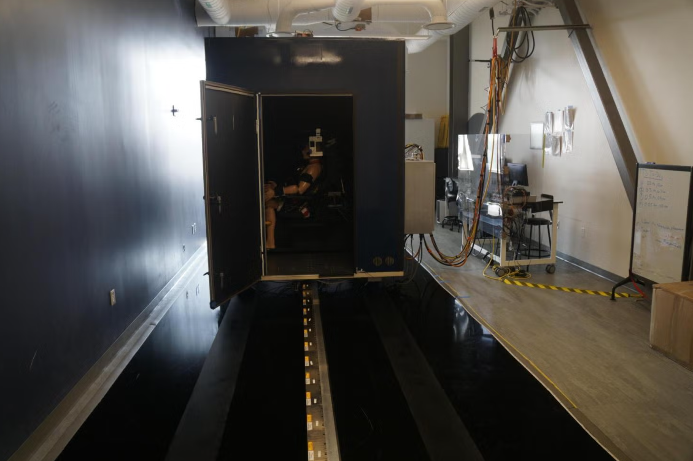
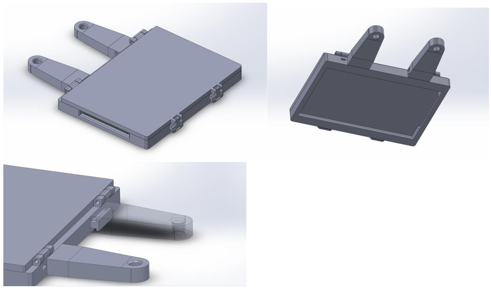

CU Bioastronautics
Tilt-Translation Sled (TTS)
The Tilt-Translation Sled is a device donated by the Neuroscience Laboratory of NASA Johnson Space Center.
It is capable of administering motions in the roll tilt and X-axis translation. The goal of the experiment is to measure
spatial awareness relying solely on their vestibular senses over the duration of a motion profile. Motion stimuli can be
administered in a variety of profiles (i.e. sinusoidal, sigmoidal, etc.) and at various frequencies.

Tilt-Translation Sled on magnetic linear actuators. Our very tolerant test dummy Randy is strapped in and ready for a run.

The inside of the TTS is blacked out to remove any visual cues for roll orientation. Roll axis about the subjects vestibular system.
I joined this project a few years into its lifetime so my role was focused on development and maintainance of the sub-systems. In an effort to expand the testing capabilities of the TTS, I was in charge of the addition of a modular input device that collects user data during the duration of the experiment. There were preexisting 1/2" threaded holes that supported all-thread over the subject head. I used these as a structural base for a tablet running test software the subject interacts with. I was only given a few constraints and considerations to work within, so I had to create a design from sctratch. One of my main focuses when I was in the early stages of ideating was the work flow and ease of use. The point of the device was to be quickly changed back and forth between experiments so I had to consider rapid mounting solutions.

Modular input mount designed to fit on 1/2" all-thread. Designed to be serviceable and reliable to the demands of testing.
sdfg dgr